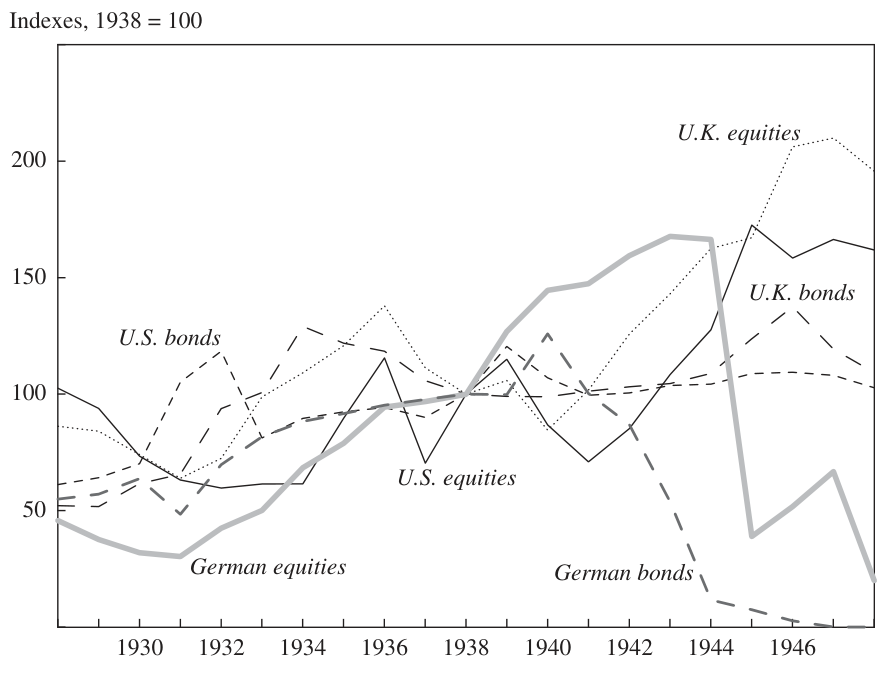
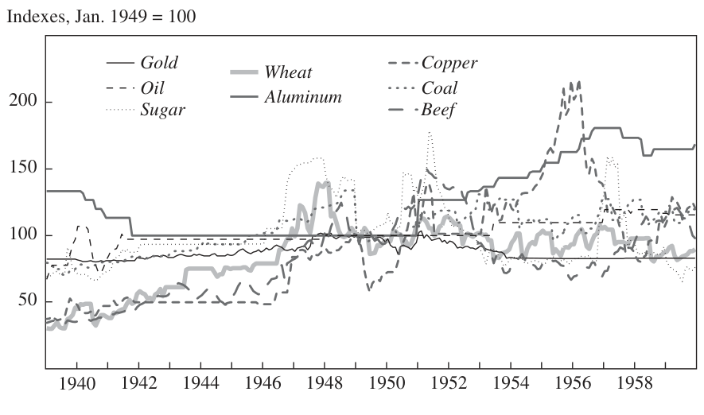

Earning from History? Financial Markets and the Approach of World Wars — Part 5/7: Third Time Lucky
What were the lessons of the Second World War? Perhaps the most obvious lesson was that no two world wars are alike—financially or in any other respect. Contrary to the Economist’s expectations and the experience of the First World War, U.K. equities outperformed gold in the five years after 1939, as well as over the ten-year period from 1939 to 1948. Even more surprisingly, as shown in the preceding section, U.K. equities did better than U.S. equities over the same time frames, and U.K. government bonds offered higher returns than U.S. Treasuries. In real terms, with dividends reinvested, the total return index for British equities was 50 percent above the 1938 level, on average, between 1939 and 1948, compared with a figure of 25 percent for American equities. The equivalent figures from the bond market were 11 percent and 6 percent (figure 11). Between September 1939 and May 1945, to express the difference more simply, the British Actuaries General Index rose by 63 percent. In sterling terms, by contrast, the Dow Jones index went up by just 6 percent. President Franklin Roosevelt once declared that he did not lead the United States into World War II in order to preserve the British Empire. Nor, evidently, did he make war to enrich investors in U.S. equities.
In sum, Keynes’s advice to British investors back in 1937—to base their decisions on “a candid examination of past experience”—turned out to be rather unsatisfactory. Past experience would have led any reasonable asset allocator to be overweight U.S. stocks in 1939. Present knowledge that London was within reach of German bombers, whereas New York was not, merely reinforced the lesson of history. Yet despite the Blitz, London beat New York for equity investors and bondholders alike. Commodity prices, too, behaved in ways that could not easily have been predicted on the basis of past experience, reflecting variations in government regulation as well as the changing nature of military technology. The Second World War broke out after two episodes of commodity price deflation, in 1929–33 and 1937–38. Wartime inflation was manifested most severely in a 116 percent increase in the price of beef. Other raw materials were much more tightly controlled, subject to a ceiling of less
NIALL FERGUSON 465
Figure 11. Inflation-Adjusted Total Returns for U.K., U.S., and German Securities before and after the Second World War

Source: Global Financial Data.
than 50 percent above the prewar price; aluminum actually declined in price during the war (figure 12). After the war, however, inflation surged as price controls were relaxed. By 1948 food prices were as inflated as they had been after the First World War, although no commodity matched sugar’s 1920 peak. Unlike in 1920–21, there was no deflation after 1945.
By themselves, these marked contrasts between the two world wars might have made investors cautious about expecting any third world war to resemble its immediate predecessor. It was in any case perfectly clear after 1945 that any future world war would be profoundly different. With the dropping of the atomic bombs on Hiroshima and Nagasaki—and, more important, with the news that the Soviet Union had successfully tested a replica of the American bomb in August 1949—the very nature of great power conflict was irrevocably altered. “The human animal . . . must change now,” President Harry Truman wrote as early as 1946, “or he faces absolute and complete destruction and maybe the insect age or an atmosphere less
466 Brookings Papers on Economic Activity, Spring 2008
Figure 12. Selected Commodity Prices before and after the Second World War

Source: Global Financial Data.
planet will succeed him.”77 On this point he and Stalin were at one. “Atomic weapons,” the latter remarked in 1949, “can hardly be used without spelling the end of the world.”78 Yet, strictly speaking, that was not yet true when the Korean War broke out in June 1950, at a time when the Soviets had no more than 5 operational bombs to the Americans’ 369. Despite the fears expressed in the Bulletin of the Atomic Scientists, it was very much earlier than “three minutes to midnight,” as the “Doomsday Clock” measured the imminence of all-out nuclear war.79 It was therefore still possible for investors in 1950 to contemplate a third world war fought primarily with conventional weapons.
For slightly more than a year, the conflict in Korea teetered on the brink of global escalation. On June 27, 1950, in the absence of the Soviet representative, the United Nations Security Council authorized foreign assistance to South Korea to repulse the North Korean invaders. This rapidly manifested itself as an American-led and largely Americanmanned expeditionary force, which, after some initial reverses, triumphantly rolled back the invaders to the 38th parallel—and beyond. On October 19, however, with Pyongyang in American and South Korean hands, China entered the war and crossed the Yalu River, inflicting a heavy
77. Gaddis (2005, p. 53). 78. Gaddis (2005, p. 57). 79. See www.thebulletin.org/minutes-to-midnight/timeline.html.
NIALL FERGUSON 467 defeat on the U.S. Eighth Army and forcing the evacuation of American forces from Hungnam harbor. The North Koreans recaptured Seoul on January 4, 1951, and continued to push south. But the tide soon turned again, and by March 14 the Eighth Army was back in control of the South Korean capital. It was during this period that General Douglas MacArthur pressed Truman to allow the use of atomic weapons against enemy targets. Although Truman sacked MacArthur on April 11, the option to use the atomic bomb was never wholly closed off and indeed was frequently contemplated by Truman’s successor, Dwight Eisenhower.80 Nor could it be taken for granted that Stalin would remain on the sidelines. A plausible scenario was that the United States would use an atomic bomb on Chinese troop concentrations, precipitating Soviet reprisals against Berlin and the devastation, once again, of Mitteleuropa. Only in retrospect was the stalemate roughly along the present demilitarized zone inevitable. Only in retrospect were the peace negotiations initiated in July 1951 bound, after two long years, to produce a lasting armistice.
What were the financial implications of a possible escalation of the Korean War? For many investors the answer had to do with the likely impact of American rearmament on inflation. The First World War had caused an upward jump in inflation in all combatant countries, but from late 1920 the trend had been painfully reversed in the English-speaking world. The Second World War had, in this respect, too, been different. Fiscal and monetary policy had been better managed, consumer demand more tightly reined in, and price controls more effectively administered, so that wartime and immediate postwar inflation was lower in both the United Kingdom and the United States than in the earlier conflict. On the other hand, there was no attempt after 1945 to turn the clock back by deflating prices back to their prewar level. The lesson many investors therefore learned from World War II was that another major war would cause a one-time rise in prices that was unlikely to be reversed.
This helps to explain the way financial markets reacted to the outbreak of the Korean War. The U.S. stock and bond markets responded negatively, but by the standards of 1914 or 1939 the effect was modest and short-lived. Subsequent crises—the Chinese crossing of the Yalu, the dismissal of MacArthur—had a negligible impact. The Economist noted a significant impact on securities “nearest to the storm centre,” notably Japanese bonds. But the “violent overnight slump in Wall Street,” which had seen the Dow Jones index fall from 224 to 214, had been followed
80. See Gaddis (2005, pp. 52–53).
468 Brookings Papers on Economic Activity, Spring 2008 by a “slight rally” after Truman’s pledge of “strong and immediate” measures, while London had seen no more than a “precautionary marking down of prices.” The really significant market moves were upward, as investors bought up commodity-related shares such as those of Rhodesian copper mines, acting on “the general assumption that the week’s developments must impart new impetus to the forces of inflation.”81
There was also an upward move in the world’s remaining free markets for gold—a reminder that under the Bretton Woods system gold was no longer freely traded in most financial centers.
Here was the new lesson of history: that a major war would have “inflationary implications” and that these would initially manifest themselves in higher commodity prices. “The western world,” noted the Economist on July 15, 1950, “has been treated in the space of three weeks to a boom in commodity prices of so far-reaching an order as to suggest that the tepid war had been heated up to boiling point.”82 First in line, besides copper, were rubber, tin, lead, and cotton, the prices of which were expected to be driven up as the United States rearmed, particularly at a time when the demand of consumer industries for the same articles was already riding high. A related expectation—once again based on the experience of World War II—was that the U.S. government would move swiftly to restrict the consumer sector’s appetite for commodities, which spelled difficult times for “nonessential” sectors such as automobiles and televisions. It also seemed reasonable to anticipate renewed demand-side restrictions on consumer credit and loans for housing, as well as increased taxation.83
By November 1952 it had become clear that the extent of the warinduced inflation would vary from country to country according to the stringency of the national fiscal and monetary authorities.84 Looking back after two years of stalemate and relatively low-intensity conflict, investors were bound to conclude that these, rather than the appetite of the military for commodities, posed the principal challenge to the preservation of wealth in times of geopolitical crisis. The Korean experience also reestablished the attractiveness to investors of the U.S. stock market, which in sterling terms easily outperformed the other assets tracked in figure 13. German stocks did not catch up until long after the threat of an escalation
81. All the quotations in this paragraph are from “The City and Korea,” Economist, July 1, 1950, p. 32. 82. “Prices and Korea,” Economist, July 15, 1950, p. 136. 83. “Strains on the Economy,” Economist, July 22, 1950, p. 172. See also “Policy for Commodities,” Economist, November 11, 1950, p. 759.
84. “Monetary Orthodoxy in Europe,” Economist, November 15, 1952, pp. 497–99.
NIALL FERGUSON 469
Figure 13. Inflation-Adjusted Total Returns for U.K., U.S., and German Securities before and after the Korean War

Source: Global Financial Data.
of the war had receded. Finally, the stabilization of the Korean conflict also meant that commodities behaved differently than they had in the Second World War. As the Economist had foreseen, most commodities did experience price rises, ranging from 14 percent at peak for wheat to 79 percent for sugar (figure 14). Gold, however, declined in price, and the price of oil (as in the Second World War) was controlled. The biggest rises in aluminum and copper prices came after the war, not during it, as civilian demand for these materials surged, liberated from the constraints of the war economy.
In the decade between the Korean War and the Cuban missile crisis— the latter widely regarded by historians as the moment when the Cold War came closest to a nuclear hot war—the nature of the superpower rivalry changed again, and the effect was once more to erode the value of the lessons of history. The financial impacts of both the harbinger of the crisis (the abortive U.S.-sponsored invasion of Cuba in April 1961) and the crisis itself (which became known to the public on the evening
470 Brookings Papers on Economic Activity, Spring 2008
Figure 14. Selected Commodity Prices before and after the Korean War

Source: Global Financial Data.
of October 22, 1962, and appeared to be receding as of October 28) were minimal.85 This was partly because the investing public knew much less about the crisis than is known today.86 They had no idea that on October 25, for the only time in the entire Cold War, the Joint Chiefs of Staff had placed the U.S. Strategic Air Command on DEFCON (defense readiness condition) 2, the highest level of alert preceding general war.87 They had no idea that, at this juncture, Kennedy himself was increasingly inclined to launch an invasion of the island (OPLAN 316 envisaged an amphibious landing by up to 90,000 U.S. troops).88 They had no idea (any more than did Kennedy) that the Soviet forces on Cuba possessed tactical nuclear weapons that could have been used against incoming U.S. forces.
Nevertheless, the minimal market movements occasioned by the crisis are remarkable and require a better explanation than public ignorance. Well-informed Americans can scarcely have been unaware of the massive increase in the destructive capability of the superpowers’ nuclear arsenals
85. President John Kennedy announced the discovery of the Soviet missiles on Cuba, as well as his decision to impose a naval “quarantine” around the island to prevent further military shipments, in a television broadcast at 7 p.m. Eastern time on October 22. The Soviet leader Nikita Khrushchev announced the withdrawal of the Soviet missiles in a broadcast on Radio Moscow at 9 a.m. Eastern time on October 28.
86. For an illuminating modern account, see Fursenko and Naftali (1997). 87. Leffler (2007, p. 151). 88. Fursenko and Naftali (1997, p. 244).
NIALL FERGUSON 471 since the first successful test of a hydrogen bomb in 1954. Fear of “missile gaps” on both sides had spurred an unrestrained arms race. During the crisis, Kennedy spoke of 200 million dead, Khrushchev of 500 million. “If the United States insists on war,” the latter told an American businessman who happened to be visiting Moscow, “we’ll all meet in hell.”89
Yet the movements in the stock market, currency markets, and commodities markets were, even by the standards of the Korean crisis, “well short of panic.”90
Why were financial markets not set ablaze by a crisis that threatened to incinerate the entire world? To some extent the markets’ seeming insouciance reflected the increased regulation of capital markets that was to be a distinguishing feature of the 1960s. In London the Cuban crisis had indeed occasioned a “large switching out of paper money and paper securities into gold,”91 suggesting that memories of 1914 (and 1938) still lingered in some minds. But these moves had minimal effects on prices because the gold market was now under even stricter government control, following the creation of a gold pooling arrangement between the Bank of England and other central banks. There was some selling pressure on the dollar, too, but neither American nor foreign investors could easily switch into other currencies, since the Eurodollar market was still in its infancy and capital controls were in place in nearly all European countries. A better explanation for the lack of financial fear may be that the likely consequences of World War III were now so horrendous as to be beyond the scope of traditional business calculation. “Business reactions to the Cuban crisis have been bewildered rather than considered,” observed the Economist in its edition of October 27 (written before the crisis was over), “for the good reason that no considered view is possible”:
The ultimate uncertainty of the nuclear age, paradoxically, itself removes the rationale of panic of the kind which accompanied the threat of less cataclysmic war. Some investors still respond instinctively to the standard maxim at such times of “Go liquid, go home”; but far more have simply sat tight and sensibly refused to embark on fanciful hypothetical prognostications which would have little relevance even if they turned out right.92
This, surely, goes to the heart of the matter. A world war waged with conventional weapons had roughly calculable financial implications. Even
89. Fursenko and Naftali (1997, p. 256). 90. “Well Short of Panic,” Economist, October 27, 1962, p. 386. 91. “Twenty Billion Dollar Question,” Economist, October 27, 1962, p. 379. 92. “Twenty Billion Dollar Question,” Economist, October 27, 1962, p. 379.
472 Brookings Papers on Economic Activity, Spring 2008 if no two such wars were identical, there was enough evidence after 1914 to allow historically minded investors to take defensive measures if they felt another such war was likely. By contrast, a world war involving multiple H-bombs was beyond the realm of probabilistic thinking. It was not merely incalculable; it was well-nigh unimaginable. For this reason investors were probably best advised to continue business as usual. If it had come to a Third World War in 1962, the performance of their portfolios would have been the last thing on their minds. As the Cold War continued, with a trend in the direction of arms limitation and superpower détente interrupted only occasionally by superpower interventions in faraway places, it made sense to continue with this strategy. With every passing year, investors paid more attention to domestic fiscal and monetary policy and less attention to the alarums and excursions of international relations. Vietnam never threatened to become a world war; its primary economic significance was in loosening American fiscal and monetary policy and sowing the seeds of higher inflation. Likewise the Middle Eastern conflicts of the 1970s were interpreted by investors primarily in terms of their inflationary impact, rather than their potential to escalate to Armageddon. By 1979, that annus horribilis for U.S. foreign policy, which culminated in the Soviet invasion of Afghanistan on Christmas Day, the actions of Federal Reserve chairman Paul Volcker were being scrutinized a great deal more closely on Wall Street than the actions of the Politburo.93